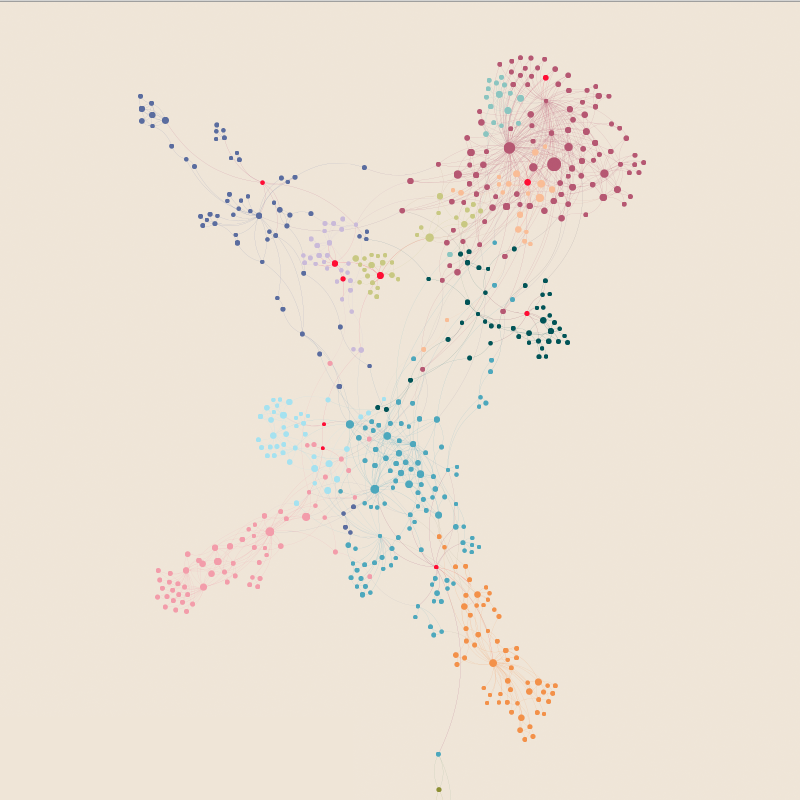
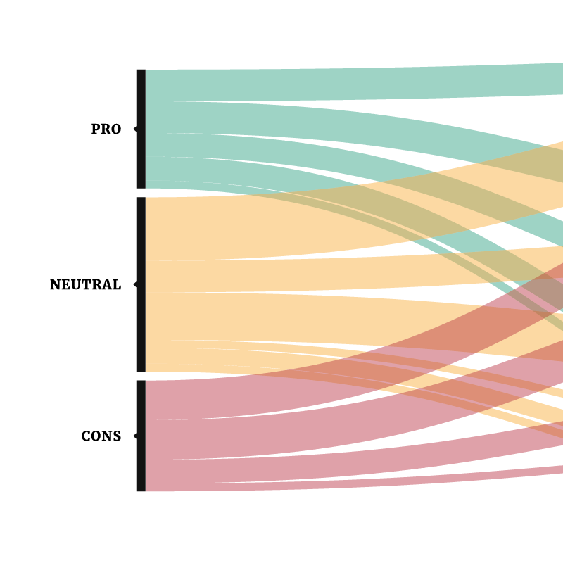
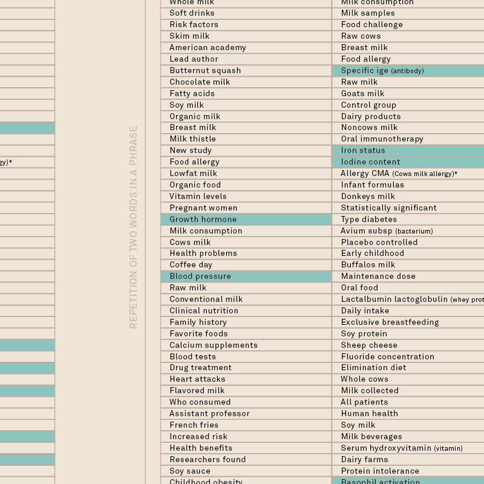
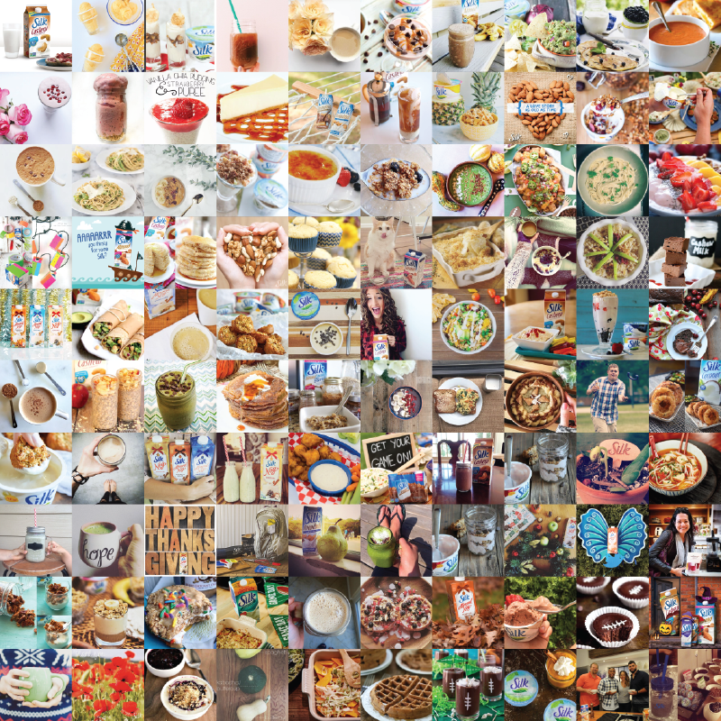

“Milk is a pale liquid produced from the mammary glands of mammals. It is the primary source of nutrition for infant mammals before they are able to digest other types of food.”
“The females of all mammal species can by definition produce milk, but cow's milk dominates commercial production. In 2011, FAO estimates 85% of all milk worldwide was produced from cows.”
- Wikipedia
Discussing about nutrition, milk is one of the most consumed product all around the world and for the majority of people it’s natural to drink it or use it as essential part of many recipes. As shown in the quotes above, when we speak about milk we usually mean cows’ milk, but it’s well known that some people have problem drinking it because of intolerance.
Regardless they can choose a milk substitute in a long list of other animal’s milks and plant’s milks. During these last years, more and more people are choosing to switch to, as they say, healthier alternatives.
Therefore, we decide to go deep in this topic and try to discover all the aspects and reasons why people are changing their habits.
From the first research, it seems that the discussion is focused on human health, effects and consequences that milk drinking has on it.
Concerning science, we can’t ignore the official voice of medicine about milk, that’s why we compare it with journalists’, who are the intermediators of the information.
In the last part we examine how the users perceive milk’s alternatives that right now are becoming always more popular and if their thoughts are somehow related with the way the producers communicate themselves on social networks.
By Carola Barnaba, Maddalena Bernasconi, Chiara Bonsignore, Eyleen Carolina Camargo, Giada Casella, Carlo Colombo
The Milk Myth
chapters

Chapter 1 - What about milk?
First look at the controversy about milk on the web, finding the stances on the issue and topics debated. In order to define which terms and topics are more relevant in the discussion.

Chapter 2 - Is drinking milk healthy?
Analysis of the actors, their argumentation of each position in each issue and analysis of the websites involved and the relationship between them.

Chapter 3 - Science vs Intermediary
Comparison between the papers and the studies about milk, relationship between milk and human health and how the news speak about the same topic, showing similarities and differences.

Chapter 4 - Alternative users
Focus on the more common non-dairy milks, observing how the users and the producers behave online and showing the connection and the influence between these two actors.
project by
- Carola Barnaba
- Maddalena Bernasconi
- Chiara Bonsignore
- Eyleen Carolina Camargo
- Giada Casella
- Carlo Colombo
Faculty
- Paolo Ciuccarelli
- Marco Fattore
- Stefano Mandato
- Michele Mauri
- Salvatore Zingale
Teaching Assistants
- Angeles Briones
- Daniele Ciminieri
- Gabriele Colombo
- Azzurra Pini